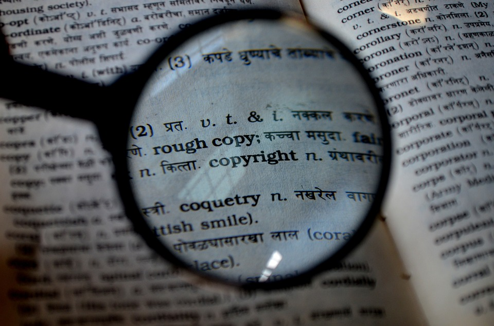

Les Artistes et le droit d'auteur

La principale fonction du droit d'auteur est de protéger les artistes d'abus de leur propriété intellectuelle ainsi que du plagiat.
Celui-ci prend une place d'autant plus importante à l'ère du numérique dans laquelle les œuvres sont partagées beaucoup plus facilement et plus vite qu'auparavant (Se référer à la page dédiée).
Imaginons le cas d'un artiste que nous appellerons "Monsieur X" :
Monsieur X est un jeune créateur musical plein de talent. Il souhaite vivre de sa passion et se prépare à proposer à la vente son nouvel album qu'il vient de finaliser et sur lequel il a passé beaucoup de temps, et dépensé beaucoup d'énergie.
Monsieur X n'a pas d'autres revenus professionnels autre que ceux de sa musique, il aimerait pouvoir continuer à composer de la musique dans de bonnes conditions, à l'abri des difficultés financières etc.…
C'est pourquoi Monsieur X choisit de partager son album sur la plateforme Bandcamp qui lui permet de toucher un large public tout en étant rémunéré.
Seulement, il se rend compte que les ventes de son album ne sont pas au rendez-vous et pour cause l'album de Monsieur X a été téléchargé par un utilisateur puis partagé sur un blog en libre téléchargement.
Monsieur X décide alors de porter plainte pour viol de son droit à la propriété intellectuelle ce qui lui permet de relancer les ventes de son album.
Dans un monde sans droits d'auteur, Monsieur X n'aurait sans doute pas pu continuer d'exercer son activité de musicien à temps plein et aurait été forcé d'arrêter de faire de la musique pour travailler.
Les droits d'auteurs permettent donc aux artistes de continuer à vivre de leur activité dans une époque où le partage de données est grandement facilité.
C'est alors aux internautes de prendre conscience de leurs responsabilités par rapport à l'évolution de l'internet mais aussi par rapport à celle de l'Art et de la propriété intellectuelle.
Cependant, même si le droit d'auteur permet de protéger les artistes ainsi que les créateurs de savoir de manière générale, il a également ses dérives qu'il ne faut pas négliger.
{kind=link}